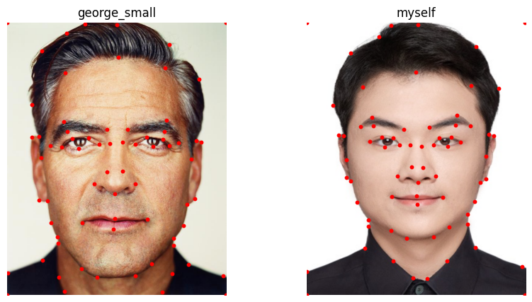
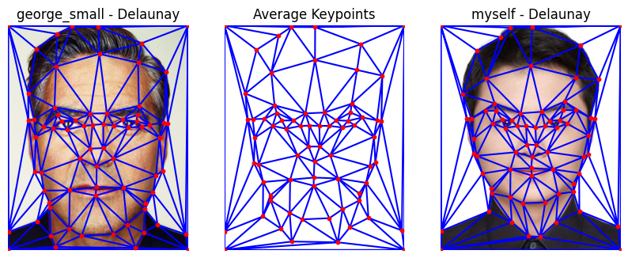
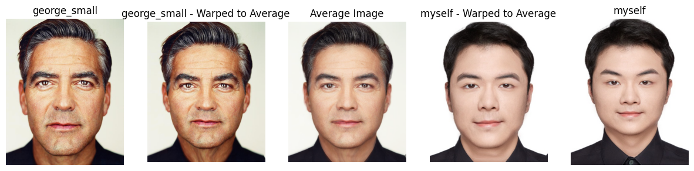
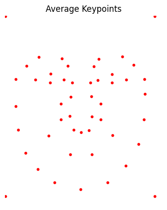
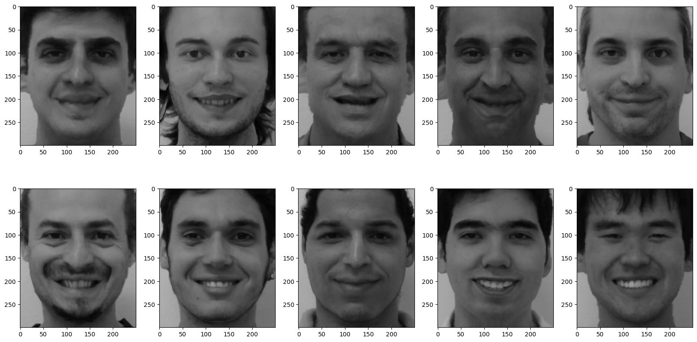
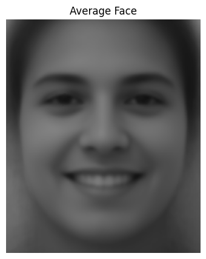
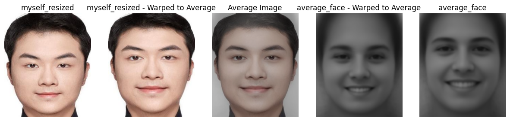
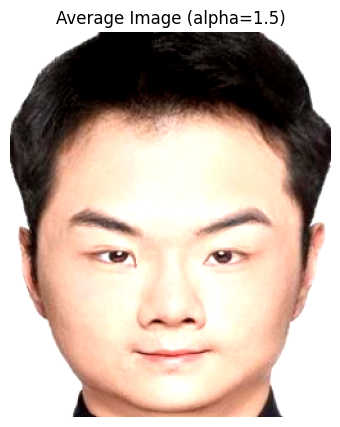
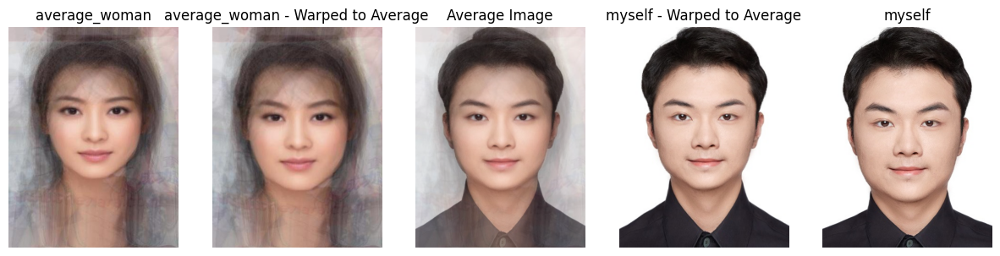
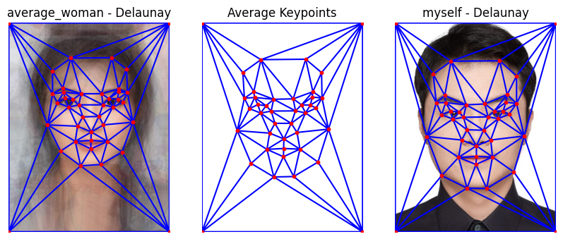

CS 180 Project 3: Face Morphing
Part 1: Defining Correspondences


Part 2: Computing the "Mid-way Face"
This part we need to align the input image to a set of target points' average positions through an affine transformation. The process consists of the following steps:
- Triangulation: Perform triangulation on the source points and target points to execute affine transformations within each triangle.
- Bounding Rectangle Extraction: For each triangle, calculate the minimum bounding rectangle that contains the triangle and extract the image region within this rectangle.
- Affine Transformation Matrix Calculation: Compute the affine transformation matrix based on the vertices of the source triangle and the target triangle.
- Applying Affine Transformation: Use
cv2.warpAffine to apply the affine transformation to the extracted rectangular image region, yielding the transformed image region.
- Mask Generation and Composition: Create a mask for the target rectangular region to ensure that only the transformed area is composed into the corresponding position of the target image.
The matrix form of affine transformation:
$$
\begin{bmatrix}
x' \\
y'
\end{bmatrix}
=
\begin{bmatrix}
a & b \\
c & d
\end{bmatrix}
\begin{bmatrix}
x \\
y
\end{bmatrix}
+
\begin{bmatrix}
tx \\
ty
\end{bmatrix}
$$
Calculation of the bounding rectangle coordinates:
$$
\text{src_rect} = \left(\min(x_i), \min(y_i), \max(x_i) - \min(x_i), \max(y_i) - \min(y_i)\right)
$$

Part 3: The Morph Sequence
Part 4: The "Mean Face" of a population





Part 5: Caricatures: Extrapolating from the mean

Bells and Whistles: Gender Change

